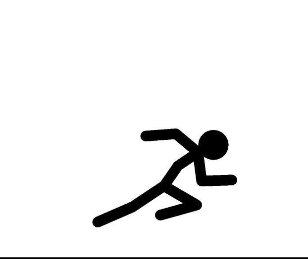

ATENCION PROGRAMADA
Orden Generada 8 de febrero de 2024 a las 9:00 AM
Días
Horas
Minutos
Segundos
0
0
0
0

Domingo 11/02/2024 09:00 hrs
PROBLEMA REPORTADO POR EL CLIENTE
El Equipo No Enciende
TRABAJO A REALIZAR
Mantenimiento General de tres PC
Mantenimiento General de Laptop